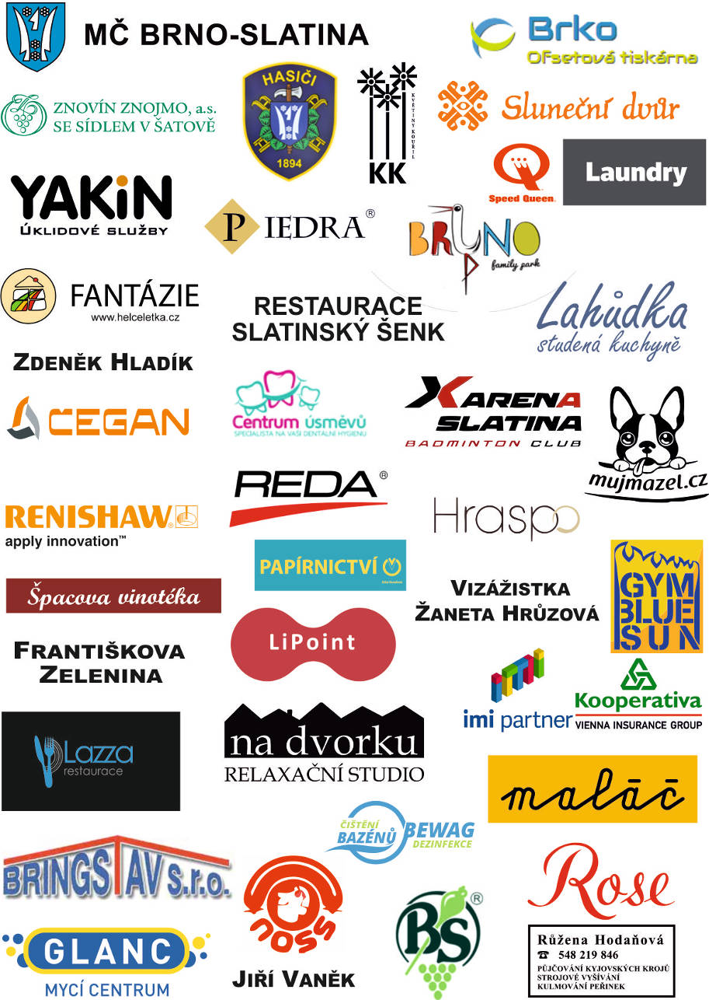

Pro sponzory
Vážení příznivci folklóru ve Slatině,
jménem spolku Slatinští stárci si Vás touto cestou dovolujeme oslovit a nabídnout Vám možnost podílet se na udržení a podpoře kulturní tradice ve Slatině, a sice – pořádání Tradičních slatinských hodů.
Náš spolek Slatinští stárci byl založen v roce 2006 s cílem zachovat a rozvíjet kulturní dění v městské části Brno-Slatina, ale zejména jako zaštiťující organizace pro pořádání Tradičních slatinských hodů. Hodová slavnost ve Slatině je historickou tradicí, která byla znovuobnovena roku 1977, od té doby se hody konají již každoročně. V letošním roce proběhne již 39. ročník slatinských hodů. Tradiční slatinské hody se během těchto let staly nejvýznamnější kulturní události v naší městské části. V posledních letech se snažíme o jejich zdokonalení a zkvalitnění, což nese nemalé náklady.
39. ročník Tradičních slatinských hodů bude organizován naším spolkem opět s podporou MČ Brno-Slatina a to v termínu 9. - 11. září 2016. Akce se v letošním roce bude konat na prostranství Přemyslova náměstí ve Slatině. Krojované bude doprovázet dechová hudba Dambořanka. Jako každý rok očekáváme vysokou účast jak obyvatel Slatiny, tak i návštěvníků ze širšího okolí.
S přihlédnutím k významu celé akce pro městskou část Brno-Slatina, se dovolujeme na Vás obrátit a věříme, že se u Vás setkáme s pochopením a podporou pro tuto akci.
Náklady spojené s organizací a technickým zajištěním slatinských hodů jsou nemalé, a tak s radostí uvítáme jakoukoliv podporu a pomoc v této oblasti, ať už finanční, materiální či organizační. Konkrétně nám můžete pomoci finančním příspěvkem dle Vašeho vlastního uvážení, věnováním věcného daru do tomboly či přímou podporou organizace hodů.
V případě jakéhokoliv daru Vám vyhotovíme sponzorskou smlouvu, na jejímž základě je možné uplatňovat odpočet ze základu daně. Na oplátku Vám můžeme nabídnout zveřejnění reklamy Vaší firmy na plakátech, na našem webu a na reklamním panelu v prostoru konání hodů. Určitě bychom v případě Vašeho zájmu našli i další formy prezentace, které by byly vhodné právě pro Vás, proto se na nás můžete kdykoliv obrátit.
Za Vaše pochopení i případnou podporu předem děkujeme.



{kind=link}